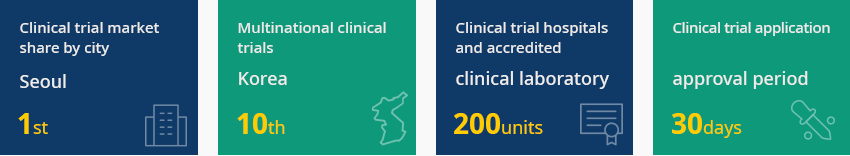
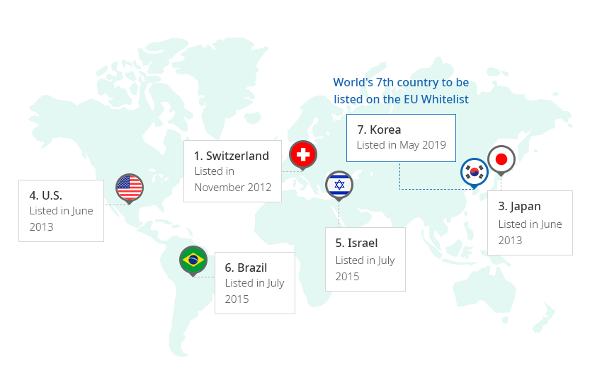
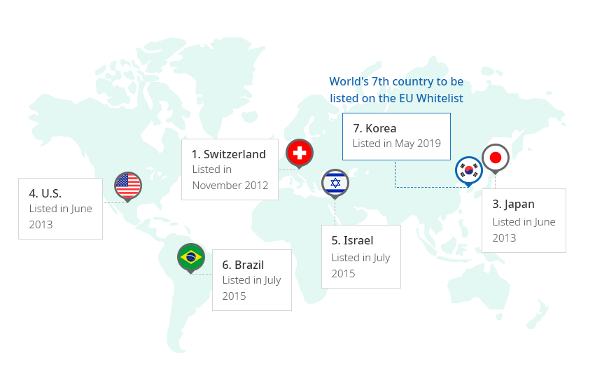
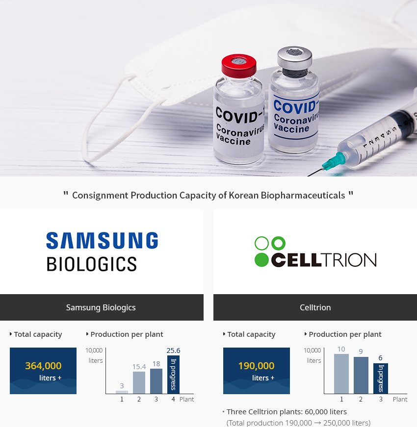
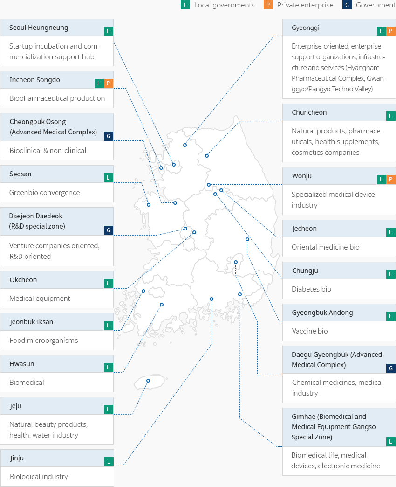

Health Care and Bio
- Home
- Why KOREA
- Industry
- Health Care and Bio
Pharmaceutical & Bio
-
No. 6 Global Clinical Trial Leader Boasting Global Clinical Trial and Regulatory Environment CloseNo. 6 Global Clinical Trial Leader Boasting Global Clinical Trial and Regulatory EnvironmentThe Ministry of Food and Drug Safety analyzed the data on the clinical trials registration system of the US National Institutes of Health (ClinicalTrials.gov). According to the analysis, Korea’s industry-led clinical trials ranked no. 6 in 2020, compared to no. 8 in 2019. Its multinational clinical trial ranking also rose from no. 12 in 2019 to no. 10 in 2020. Seoul, in particular, has continued to rank first in global clinical trial city rankings since 2017.The number of clinical trials on pharmaceuticals in Korea rose by 12% year-on-year in 2020, showing a steady increase, thanks to excellent infrastructure in Korea. Korea offers a prompt application and approval period (30 days), efficient IRB composition, and over 30 proven clinical trial hospitals and 170 clinical trial centers (CTCs) that have large and diverse patient pools.Korea joined the Pharmaceutical Inspection Convention and Pharmaceutical Inspection Co-operation Scheme (PIC/S) in 2014 and the (International Council for Harmonisation of Technical Requirements for Pharmaceuticals for Human Use (ICH) in 2016, being recognized as a developed country in terms of pharmaceuticals regulation. In May 2019, Korea became the seventh country to be listed on the EU Whitelist. Korea is now exempt from the GMP written confirmation of drug substances, which was required for exports to the EU.
- Clinical trial market share by city 'Seoul' 1st
- Multinational clinical trials 'Korea' 10th
- Clinical trial hospitals and accredited clinical laboratory 200 units
- Clinical trial application and approval period 30 days
 ※ Source: Ministry of Food and Drug Safety/Korea Biotechnology Association"EU White List (Countries Exempted from the GMP Written Confirmation)"World's 7th country to be listed on the EU Whitelist
※ Source: Ministry of Food and Drug Safety/Korea Biotechnology Association"EU White List (Countries Exempted from the GMP Written Confirmation)"World's 7th country to be listed on the EU Whitelist- 1. Switzerland Listed in November : 2012.11
- 3. Japan Listed in November : 2013.6
- 4. US Listed in November : 2013.6
- 5. Israel Listed in November : 2015.7
- 6. Brazil Listed in November :2015.7
- 7. Korea Listed in November : 2019.5
※ Source: Ministry of Food and Drug Safety -
World-Class Biopharmaceutical Consignment Production Facility OpenWorld-Class Biopharmaceutical Consignment Production FacilityKorea is raising its status as a base for global biopharmaceutical consignment production. Samsung Biologics is building its fourth plant with a capacity of 256,000 liters in addition to the existing 364,000 liters of production capacity. Celltrion is also planning to build its third plant with an additional 60,000-liter capacity in addition to the existing 190,000-liter production capacity.Amid the COVID-19 pandemic, consignment production cooperation between Korean companies and global vaccine companies is underway. SK Bioscience is promoting consignment production of AstraZeneca and Novavax, while Samsung Biologics is consigned to produce the Moderna vaccine.
"Consignment Production Capacity of Korean Biopharmaceuticals"
- Samsung Biologics
- Total capacity - 364,000 liters+
- Production per plant
- plant 1: 30,000 liters
- plant 2: 154,000 liters
- plant 3: 180,000 liters
- plant 4: 256,000 liters (In progress)
- CELLTRION
- Total capacity - 190,000 liters+
- Production per plant
- plant 1: 100,000 liters
- plant 2: 90,000 liters
- plant 3: 60,000 liters (In progress)
Three Celltrion plants: 60,000 liters (Total production 190,000 → 250,000 liters)
- Samsung Biologics
-
Growth of the Entire Bio Industry Focused on Finished Pharmaceutical Products OpenGrowth of the Entire Bio Industry Focused on Finished Pharmaceutical ProductsDomestic pharmaceutical production in 2020 was KRW 24.5 trillion, up 10.1% compared to the previous year, according to the Ministry of Food and Drug Safety. The industry has shown an average annual growth rate of 6.9% over the past five years. Finished pharmaceuticals accounted for 85.6% and raw materials accounted for 14.4% of total pharmaceutical production.(Unit : KRW trillion, %, USD 100 million, $)
Bio Industry Trend Category, Years ※ Source: 2018 Domestic Bio Industry Survey -
R&D and Government Support for Advanced Biopharmaceuticals OpenR&D and Government Support for Advanced BiopharmaceuticalsThe biopharmaceutical market is a growth engine industry in Korea that is growing at an average annual rate of 13%, thanks to exports of biosimilar products.Korea has shown outstanding R&D on biosimilar. As of September 2021, eight out of 31 biosimilars products approved by the US FDA were developed in Korea, demonstrating the country’s rapid R&D capabilities.The Korean government has selected the bio industry as one of the three key industries for national innovative growth and prepared supportive policies for industries and companies with a K-Global Vaccine Hub Strategy for the sake of COVID-19 responses and treatment. Foreign investment in medicine and bio that have reached certain requirements will be exempted from income taxes, acquisition taxes, and property taxes, according to the Restriction of Special Taxation Act. Capital goods designated in the decree of the same act will be exempted from duties, individual consumption taxes, and value-added taxes. From 2022, the Advanced Investment District Designation and the Improved Cash Grant System will be implemented to expand the benefits for foreign-invested companies.Meanwhile, the Act on the Safety of and Support for Advanced Regenerative Medicine and Advanced Biological Products has been in effect since September 2020. Advanced biological products refer to biopharmaceuticals manufactured from living cells, tissues, or genes, and include cell therapy, gene therapy, and tissue engineering products. A rational approval review system has been established to match the characteristics of advanced biopharmaceuticals that are different from existing synthetic drugs, such as manufacturing and quality control standards.

-
Global Pharmaceutical Companies Conduct More Clinical Studies and Joint R&D in Korea OpenGlobal Pharmaceutical Companies Conduct More Clinical Studies and Joint R&D in KoreaThe total R&D cost invested by 35 global companies in 2019 was approximately USD 400 million (KRW 483.7 billion), according to the Korea Research-based Pharma Industry Association, these companies conducted 1,536 clinical studies in Korea in 2019 alone.Global pharmaceutical companies share their experiences and cooperate with Korean pharmaceutical companies to enter overseas markets."Joint Overseas Expansion Cases of Multinational and Korean Pharmaceutical Companies"
Joint Overseas Expansion Cases of Multinational and Korean Pharmaceutical Companies Foreign-invested Companies, Korean Companies/Organization, Cooperation Foreign-invested Companies Korean Companies/Organization Cooperation Abbott Requesting companies Regular training on the latest global clinical and licensing/regulatory trends Abbvie Donga ST Joint research on immuno-oncology drug MerTK inhibitor Janssen Yuhan Joint development and contract of commercialization and technology export of Lazertinib, a lung cancer treatment MSD Samsung Bioepis Cooperate for global commercialization of multiple biosimilars Donga ST Joint overseas expansion of Tedizolid, a new superbacterial antibiotic Hanmi Pharm R&D investment and exports of Cozaar XQ, a hypertension treatment, to 50 countries Seoul Bio Hub Opened MSD Innovation Partnering Office (March 2020) and support Korean companies’ global expansion Zuellig Pharma Boryung Pharmaceutical Exclusive license agreement in 13 Southeast Asian countries for Kanarb and Ducarb ※ Source: Korea Research-based Pharma Industry Association 2020 Annual ReportGlobal pharmaceutical companies are conducting various new drug development research together with domestic pharmaceutical companies, medical institutions, and research institutes."Joint R&D Cases of Multinational Pharmaceutical and Korean Companies"Joint R&D Cases of Multinational Pharmaceutical and Korean Companies Foreign-invested Companies, Korean Companies/Organization, Cooperation Foreign-invested Companies Korean Companies/Organization Cooperation AstraZeneca Donga ST Joint research on three leading substances for immuno-oncology Bayer Vital Smith, Sky Labs, etc Launched Grants4Apps Korea, a Korean version of Bayer’s open innovation program BMS Samsung Biologics Concluded a production contract for a new commercial bio-antibody drug - Launched Korea Open Innovation to find domestic partners GSK Major Korean research institutes/td> Joint R&D on next-generation anti-cancer drugs, first trial in patient research on immuno-oncology drug candidates Leo Pharma - Launched LEO Open Innovation Lab program, a skin disease research support program Lilly Korea Research Institute of Chemical Technology Signed an open innovation drug development partnership MSD Pan-government New Drug Development Project Team Joint R&D on anti-cancer drugs with various Korean bio ventures, such as Genexine, Medpacto, Parmepsin, and NKMAX Novartis Seoul Bio Hub Operate Novartis Korea Innovation Partnering Office for cooperation with Korea Catholic Medical Center Signed an MOU for research cooperation for new drug development using health and medical data and digital technology (April 2020) Pfizer - INSPIRE Program (2012-present) Sanofi-Aventis - Promote collaboration with promising bio-startups in Korea to develop next-generation anti-cancer drugs Sanofi-Pasteur SK Bioscience Global joint research on next-generation pneumococcal conjugate vaccine ※ Source: Korea Research-based Pharma Industry Association 2020 Annual Report -
Bio Clusters by Region OpenBio Clusters by RegionBio-related clusters have been established throughout Korea. A number of clusters specializing in pharmaceuticals are located in Osong, Daegu, Incheon, and Hwasun. A bio cluster is a close network of universities, companies, hospitals, and research institutes based in specific region. If foreign pharmaceutical companies entering Korea are located in such areas, various incentives, such as tax credits, will be provided, and they can also network with related universities, companies, hospitals, and research institutes."Bio Clusters in Korea"[L] Local government / [P] Private enterprise / [G] Government
- Seoul Heungneung (L): Startup incubation and commercialization support hub
- Gyeonggi (L, P): Enterprise-oriented, enterprise support organizations, infrastructure and services (Hyangnam Pharmaceutical Complex, Gwanggyo/Pangyo Techno Valley)
- Incheon Songdo (L, P): Biopharmaceutical production
- Chuncheon (L): Natural products, pharmaceuticals, health supplements, cosmetics companies
- Biopharmaceutical production(G): Bioclinical & non-clinical
- Wonju (L, P): Specialized medical device industry
- Seosan (L): Greenbio convergence
- Jecheon (L): Oriental medicine bio
- Daejeon Daedeok (R&D special zone) (G): Venture companies oriented, R&D oriented
- Chungju (L): Diabetes bio
- Okcheon(L): Medical equipment
- Gyeongbuk Andong (L): Vaccine bio
- Daegu Gyeongbuk (Advanced Medical Complex) (G): Chemical medicines, medical industry
- Jeonbuk Iksan(L): Food microorganisms
- Gimhae (Biomedical and Medical Equipment Gangso Special Zone)(L): Biomedical life, medical devices, electronic medicine
- Hwasun (L): Biomedical
- Jinju (L): Biological industry
- Jeju (L): Natural beauty products, health, water industry
※ Source: Ministry of Health and Welfare, local governments
※ Data cooperation: Korea Biotechnology Industry Organization


Invest KOREA
Recommendation on Locations
Industrial complex information
[Incheon Metropolitan City Michuhol-gu] Incheon General Industrial
Complex
Click [Go to Detailed Information] to go to the relevant information screen of
Smart K-Factory service of Industrial Complex Corporation.
-
Complex nameIncheon General Industrial Complex
-
Initial designation date1973.04.01
-
Designated area(m2)1,136,269
-
ManagementIncheon Metropolitan City Corporation
-
Nearby RailwayBupyeong Station
-
Distance from station(km)7
-
Nearby AirportGimpo International Airport
-
Distance from airport(km)29
-
Industrial water Supply capacity(ton/day)-
-
Affiliation local governmentIncheon Metropolitan City Michuhol-gu
-
Population2,943,491
Industrial complex information
[Chungcheongbuk-do Cheongju City] Osong Life Science Complex
Click [Go to Detailed Information] to go to the relevant information screen of
Smart K-Factory service of Industrial Complex Corporation.
-
Complex nameOsong Life Science Complex
-
Initial designation date1997.09.23
-
Designated area(m2)4,833,314
-
ManagementKorea Industrial Complex Corporation
-
Nearby RailwayCheongju Station
-
Distance from station(km)9
-
Nearby AirportCheongju International Airport
-
Distance from airport(km)21
-
Industrial water Supply capacity(ton/day)25000(㎥/day)
-
Affiliation local governmentChungcheongbuk-do Cheongju City
-
Population843,782
Industrial complex information
[Gyeongsangbuk-do Andong City] Gyeongbuk Bio 2nd General Industrial
Complex
Click [Go to Detailed Information] to go to the relevant information screen of
Smart K-Factory service of Industrial Complex Corporation.
-
Complex nameGyeongbuk Bio 2nd General Industrial Complex
-
Initial designation date2016.02.29
-
Designated area(m2)299,829
-
ManagementGyeongsangbuk-do Andong City
-
Nearby RailwayAndong Station
-
Distance from station(km)19
-
Nearby AirportDaegu International Airport
-
Distance from airport(km)111
-
Industrial water Supply capacity(ton/day)1863(㎥/day)
-
Affiliation local governmentGyeongsangbuk-do Andong City
-
Population158,867
Industrial complex information
[Gyeongsangbuk-do Andong City] Gyeongbuk Bio General Industrial
Complex
Click [Go to Detailed Information] to go to the relevant information screen of
Smart K-Factory service of Industrial Complex Corporation.
-
Complex nameGyeongbuk Bio General Industrial Complex
-
Initial designation date2004.07.05
-
Designated area(m2)941,431
-
ManagementGyeongsangbuk-do Andong City
-
Nearby RailwayYecheon Station
-
Distance from station(km)15
-
Nearby AirportDaegu International Airport
-
Distance from airport(km)111
-
Industrial water Supply capacity(ton/day)5287(㎥/day)
-
Affiliation local governmentGyeongsangbuk-do Andong City
-
Population158,867
Industrial complex information
[Gyeonggi-do Hwaseong-sity] Gyeonggi Hwaseong Bio Valley General Industrial
Complex
Click [Go to Detailed Information] to go to the relevant information screen of
Smart K-Factory service of Industrial Complex Corporation.
-
Complex nameGyeonggi Hwaseong Bio Valley General Industrial Complex
-
Initial designation date2012.07.04
-
Designated area(m2)0
-
ManagementHwaseong City Corporation
-
Nearby RailwaySuwon Station
-
Distance from station(km)27
-
Nearby AirportGimpo International Airport
-
Distance from airport(km)52.5
-
Industrial water Supply capacity(ton/day)3154(㎥/day)
-
Affiliation local governmentGyeonggi-do Hwaseong-sity
-
Population842,864
Industrial complex information
[Jeollabuk-do Iksan City] Iksan 4th Industrial Complex [formerly: Iksan
General Medical Science]
Click [Go to Detailed Information] to go to the relevant information screen of
Smart K-Factory service of Industrial Complex Corporation.
-
Complex nameIksan 4th Industrial Complex [formerly: Iksan General Medical Science]
-
Initial designation date2008.03.14
-
Designated area(m2)502,825
-
ManagementJeollabuk-do Iksan City
-
Nearby RailwayHwangdeung Station
-
Distance from station(km)4
-
Nearby AirportGunsan Airport
-
Distance from airport(km)47
-
Industrial water Supply capacity(ton/day)4,540(㎥/day)
-
Affiliation local governmentJeollabuk-do Iksan City
-
Population283,496